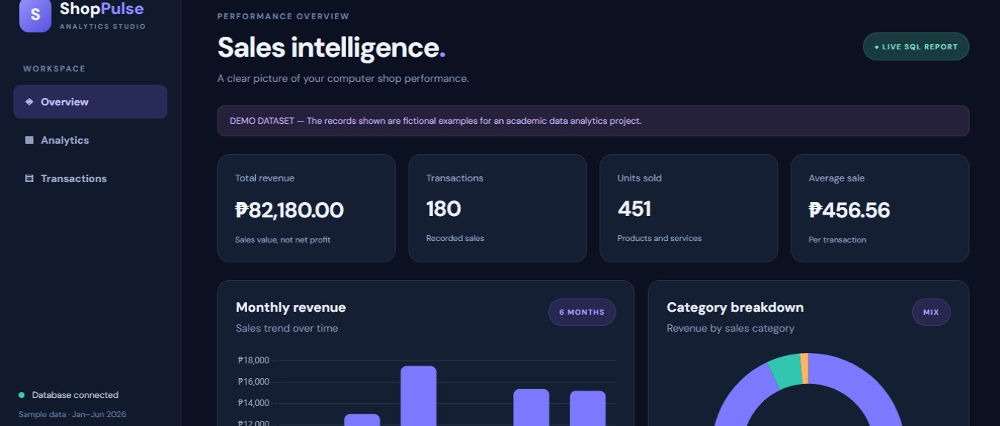
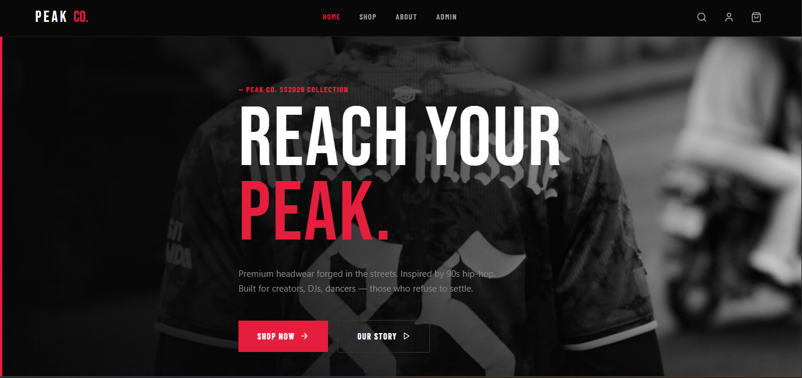

EduTrack
The institution’s development, as outlined in this profile, spans vocational computer training programs.
I build practical digital experiences that are useful, secure, and easy to trust.
Technology matters when it makes someone's day work better.
I am a Bachelor of Science in Information Technology graduate building a career around useful, dependable technology. My studies gave me a broad view of the discipline: programming, databases, systems analysis, networking, cybersecurity, and the teamwork that brings them together.
I enjoy moving between those layers, asking how a feature should work for a person and what makes a system reliable under real conditions. I care about clarity, structure, and evidence, because good technology should be understandable, efficient, and safe to use.
I work across the stack, but I always aim for clarity and maintainability.
These projects show how I translate requirements into useful, testable results.
The institution’s development, as outlined in this profile, spans vocational computer training programs.

An online shopping platform for browsing products and discovering items in one convenient place.

Premium headwear forged in the streets, inspired by 90s hiphop. Built for creators, DJs, and dancers who refuse to settle.
Selected certifications and learning milestones that reflect my technical growth.
Good systems are shaped by clear trade-offs and evidence.
Repeated records and unclear ownership made reporting inconsistent.
Normalized entities, clarified relationships, and simplified queries for the reporting layer.
Unrestricted form input allowed malformed data and confusing user flows.
Added type checks, validation rules, and clearer error messages before data reached storage.
Teams were moving quickly but not always from the same understanding of the task.
Defined scope, acceptance criteria, and required checks before implementation started.
Treat input as data, never executable instruction.
Untrusted input changes query meaning; crafted login or search text may bypass logic or expose records.
Unauthorized access, data disclosure or modification, account compromise, and lost trust.
Use parameterized queries, validate expected type/length, least privilege. Filtering alone is not enough.
Generic auth errors, modern password hashing, no secrets in source control, and never log credentials.
// Safe: query structure stays separate from user data
const query = "SELECT id FROM users WHERE email = ? AND password_hash = ?";
db.execute(query, [email, passwordHash]);AI can speed up a draft. It cannot own the result.
| Date | Task | AI assistance | Personal verification / audit result |
|---|---|---|---|
| 2026-02-12 | Plan database | Compared entities and relationship questions. | Redrew ERD from requirements; checked keys, cardinality, normalization. |
| 2026-02-18 | Debug validation | Explained browser validation and likely causes. | Reproduced; tested empty, malformed, valid input; retained server validation. |
| 2026-03-03 | Review security | Suggested injection and output-encoding checklist. | Checked implementation and trusted docs; used parameterized SQL. |
| 2026-03-14 | Dashboard summary | Suggested labels and concise summary. | Recomputed from source rows and corrected a misleading interpretation. |
Brainstorming, explaining concepts, generating test ideas, and improving a draft can accelerate sound work.
No private data in public tools, no untested code accepted, no confident output treated as evidence. I verify and own the decision.
Evidence today, deliberate growth over three years.
Your College / University · 2022–2026
Systems analysis, databases, software development, networking, information assurance.
Your Organization · 2025–2026
Replace with verified duties and measurable contributions.
Add verified credential, issuer, and date only.
Junior Full-Stack Developer or Application Support Engineer; build secure, maintainable software.
Ship two polished projects, practice interviews weekly, earn a cloud or security fundamentals credential.
Contribute to production code; strengthen testing, deployment, and code review habits.
Own a feature from discovery to monitoring; deepen expertise and help teammates through documentation.
Practice project walkthroughs, STAR examples, debugging explanations, and trade-off discussions.
A mock interview showcasing interview readiness and communication.
The work behind the qualification, and the work still ahead.
When I began studying information technology, I imagined that progress would look like collecting languages and tools. I did learn to write code, configure systems, query databases, and make interfaces. But the more important change was learning how to approach a problem before reaching for a solution. What does the person actually need? What evidence do I have? Which assumption can I test first? Those questions have made me more useful than any single framework.
My first substantial programming assignments taught me that a working result and a dependable result are not always the same thing. A feature could appear correct with one example and fail as soon as someone entered an empty value, used a different device, or followed an unexpected path. I learned to treat validation, clear error states, and testing as part of the feature itself. That shift changed how I plan work: I now think about ordinary use and edge cases together, and I try to make the next person's understanding of the code part of the deliverable.
Databases and systems analysis helped me see the value of structure. A well-considered data model makes relationships visible and reduces avoidable inconsistency. A readable diagram can uncover a missing requirement before it turns into a difficult migration. Building dashboards taught me a related lesson: a chart is an argument about what matters. If the source data is incomplete or the calculation is wrong, a polished visualization only makes the mistake more persuasive. I have become more careful about checking definitions, tracing values back to their source, and explaining limitations alongside results.
If you are looking for someone dependable, curious, and ready to learn, I’d love to connect.